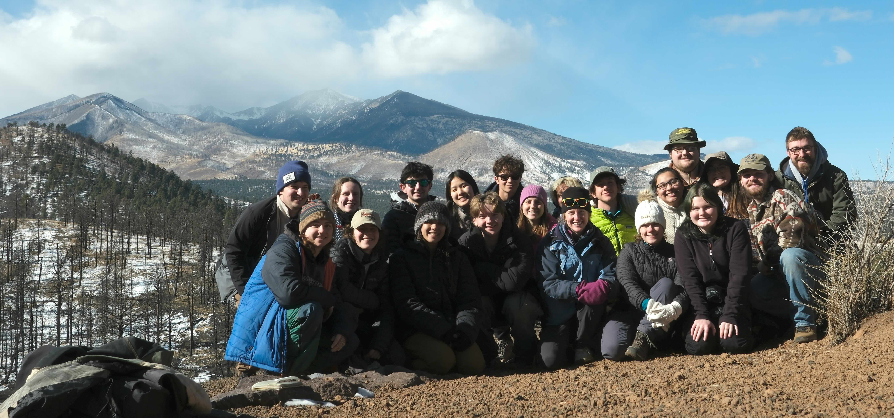
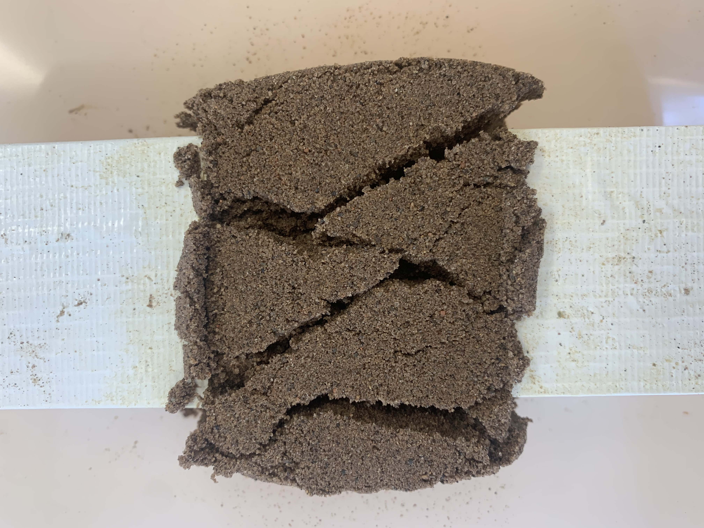
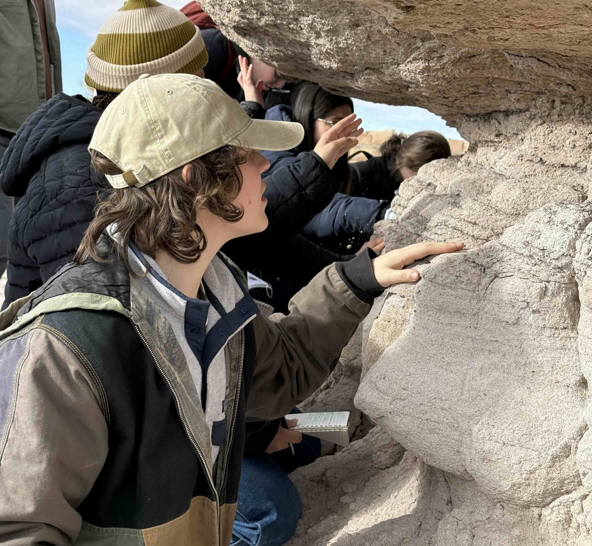

Teaching




Motivation and Approach
The ability to think like a geoscientist is increasingly important in our society. The global challenges of this century – climate change, water scarcity, stress on our food system – are almost all geologically related. Through teaching in the classroom, in the field, and by involving students in active research, I hope to educate the next generation of global citizens in our deeply interconnected Earth system.
I use a quantitative, data-driven approach to teaching that gets students working with real geologic data, interacting with physical phenomena in activities and labs, and collecting and analyzing the geologic record on field trips. I hope students leave my classes with a firm understanding of how we observe our world, go about analyzing data, and make well-supported interpretations.